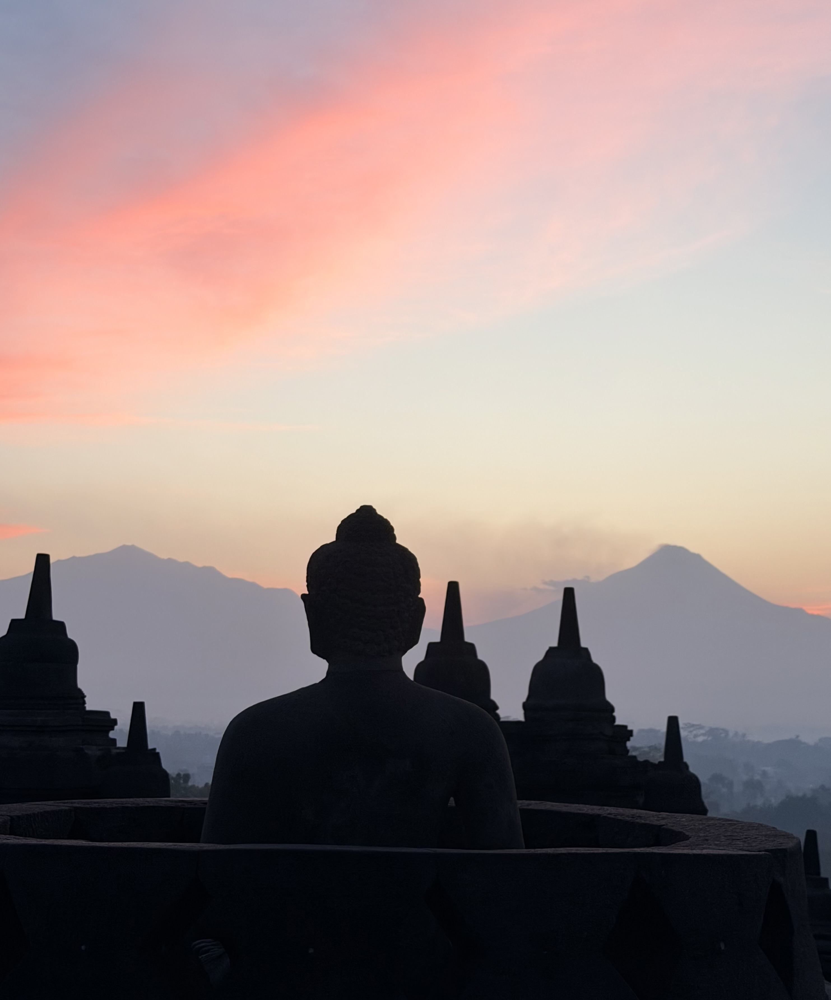

The Experience
More than just Borobudur
Java surprised us from the very beginning. We arrived expecting to see one of the world's great Buddhist temples, but left remembering so much more. From sunrise over Borobudur to quiet mountain roads, coffee plantations and peaceful villages, this is a destination that rewards anyone willing to slow down and explore.
Of course, Borobudur deserves every bit of its reputation. Watching the morning mist lift as the first rays of sunlight illuminate the ancient stone stupas is one of those rare travel experiences that genuinely exceeds expectations. It's peaceful, spiritual and unlike anywhere else we've visited.
What stayed with us most, however, was everything beyond the temples. Luxurious countryside retreats, warm local hospitality and dramatic volcanic landscapes gave the journey a depth that we hadn't anticipated. Java isn't somewhere to rush through—it's somewhere to savour.
